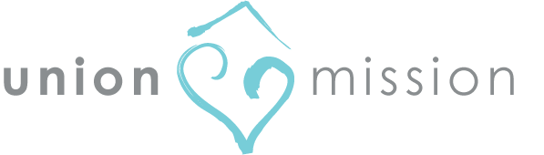
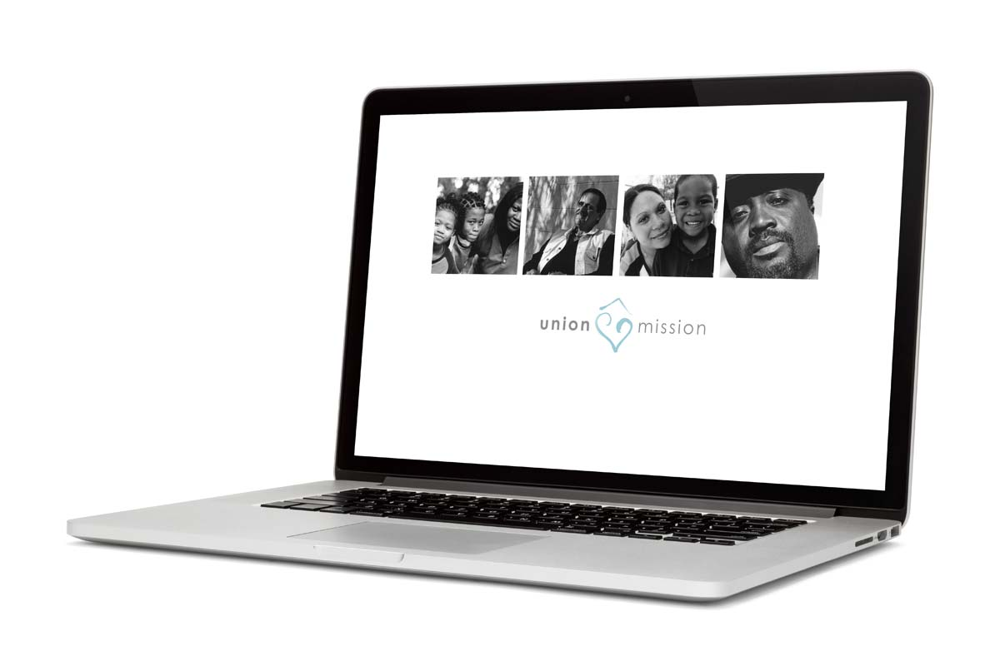
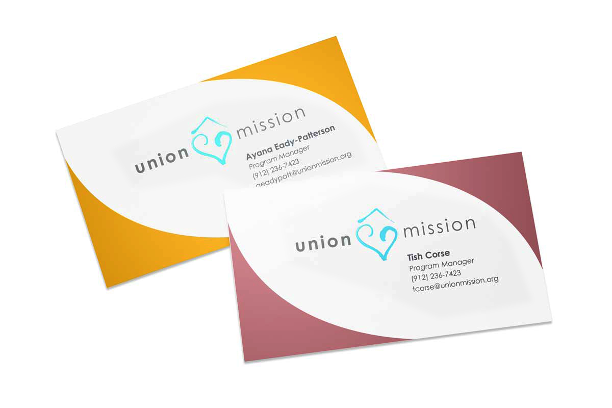

Non-profit Branding
Union Mission
A Savannah, GA organization for the homeless community. Their programs address shelter, long and short-term housing, health care, behavioral counseling, substance abuse, job and life skills training and employment assistance.



Problem
The organization didn't have a consistent logo or brand even though they have been in operation since 1936. They needed a brand identity and website that showed compassion and featured their full range of community services.
Solution
- Designed a logo that embodied the physical and emotional shelter the organization provided to the local homeless community.
- Organized a color pallet that allowed each service a unique color "code," creating a unified look that offers a way to differentiate the type of assistance offered.
- The website utilized the pleasant color pallet while offering an easy-to-navigate pages to allow patrons and donors to quickly find the pages relevant to their needs.
Roles
- Web Developer
- Graphic Designer